PhD candidate, Computer Science 2017 - Paused
UNICAMP - University of Campinas, São Paulo, Brazil
- Thesis: Transprecision Polymorphic FPU for Mixed-Precision Computing
- CAPES Scholarship; all credit requirements completed
I am a computer scientist with a solid background in bare-metal programming, Linux, computer graphics, generative AI, hardware emulation, compilers, and game development. I have worked for several leading companies, including IBM, Dell Technologies, and PUC-Campinas. In addition, I have proven experience developing highly sophisticated applications, including operating system components such as drivers, schedulers, graphical interfaces, bootloaders, game engines, and firmware. I also have academic teaching experience and have led and overseen several research and development projects throughout my career.
UNICAMP - University of Campinas, São Paulo, Brazil
UNICAMP - University of Campinas, São Paulo, Brazil
University Tirandentes, Sergipe, Brazil
DELL, São Paulo, Brazil
PUC, São Paulo, Brazil
AXNTEK, São Paulo, Brazil
Idea IP, São Paulo, Brazil
IBM, São Paulo, Brazil
UFS/SE, Sergipe, Brazil
Lumen Games, Sergipe, Brazil
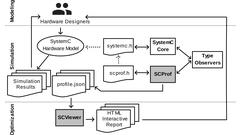
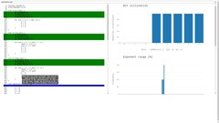
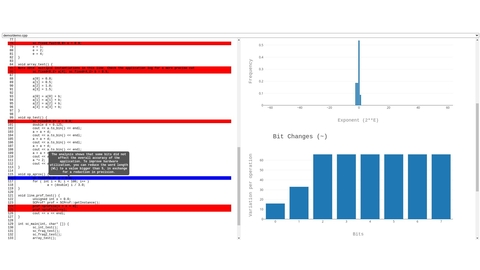
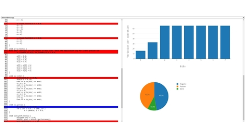
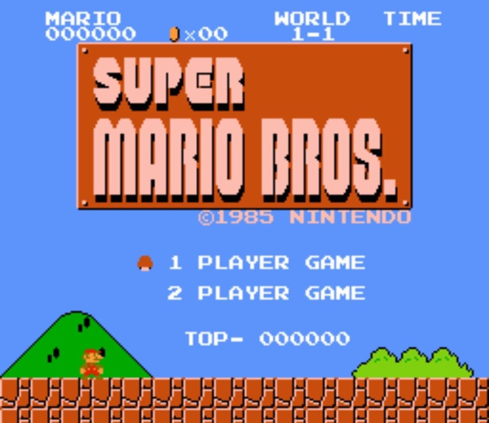
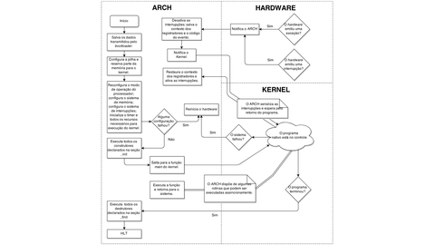
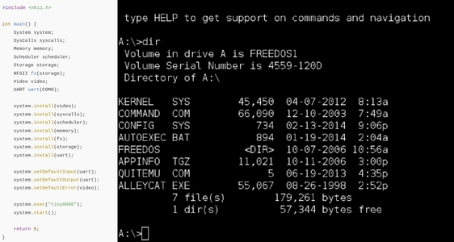
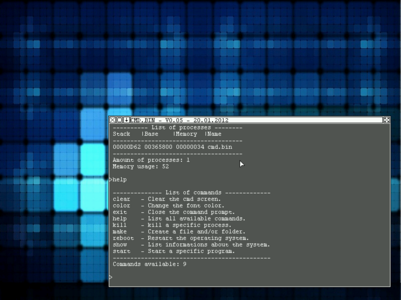
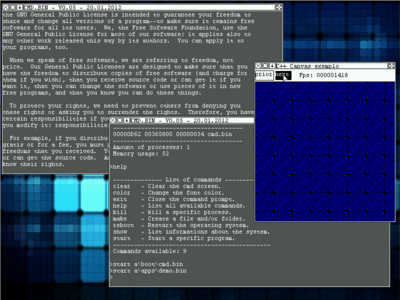
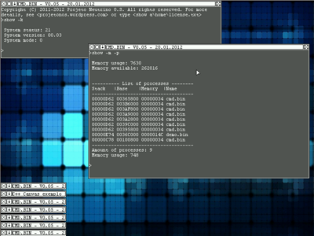
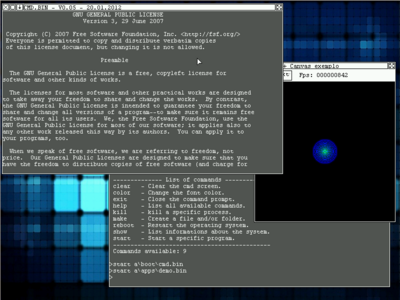
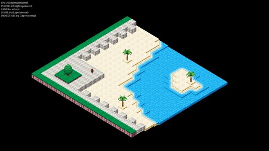
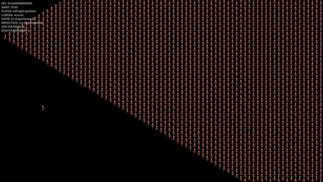
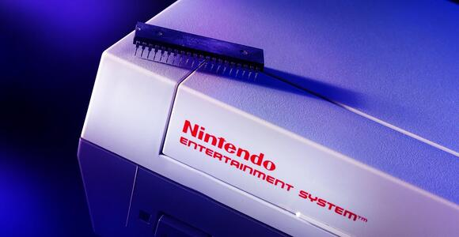
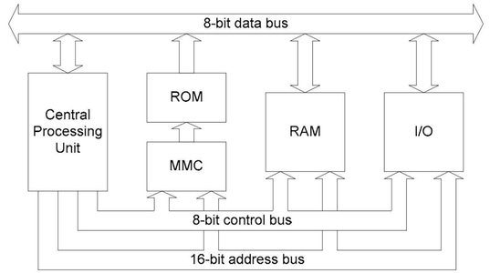
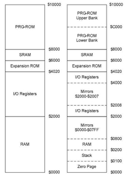
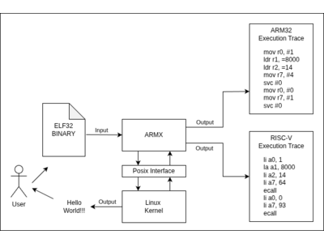
I am a developer with more than 12 years of experience designing applications for various computer architectures and operating systems, including Android, iOS, macOS, Windows and Linux. Unlike most developers, my practical skills are not confined to a specific layer of the computing stack. I am curious, self-taught and capable of working across the entire system - from CPU design, firmware, and operating systems to compilers and higher-level software, such as VR/AR games, 3D physics simulations, responsive websites, and AI-driven applications. Given my expertise and generalist background, I am seeking a Systems Engineer position where my skills can be fully utilized and challenged.